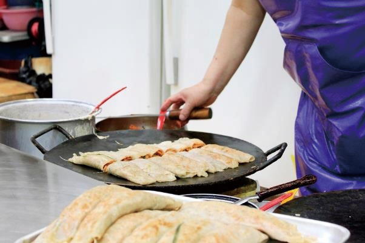
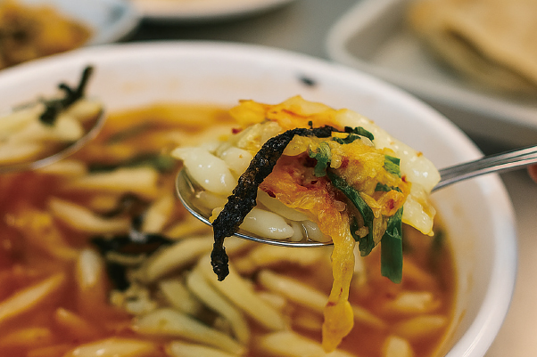
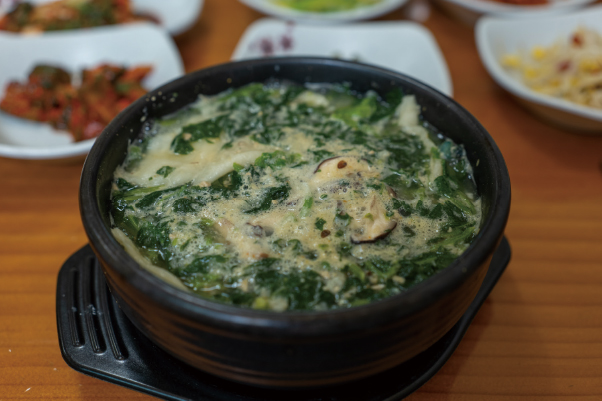
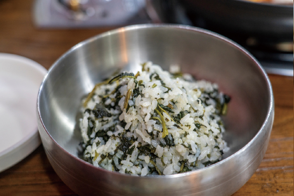

글. 편집실
자료제공. 영월군청 문화관광과,
영월문화관광재단, 한국관광공사
동강이 굽이쳐 흐르는 영월은 단종의 애환이 서린 역사의 고장이다. 청정 자연환경 덕분에 다슬기, 메밀, 곤드레 등 토속 식재료가 풍부한 이곳에서 소박하지만 정직한 영월의 맛을 만나보자.

영월 시외버스터미널에서 도보 1분 거리의 전통시장. 시장 안쪽에는 메밀전병을 파는 가게들이 밀집해 있는데, 미탄집이 특히 인기다. 메밀가루를 묽게 반죽해 철판에 얇게 펴고, 그 위에 김치를 올려 돌돌 말아낸 전병은 한 개 2천 원. 할머니들이 직접 반죽을 부어 한 장 한 장 정성스레 구워내는 모습을 보고 있노라면 마음까지 따뜻해진다. 메밀의 루틴 성분은 스트레스 완화에도 도움을 준다니 더욱 반갑다.

메밀전병과 함께 서부시장의 명물로 꼽히는 강원도 향토음식이 올챙이국수다. 옥수수 전분으로 죽을 쑤어 바가지 구멍을 통해 찬물에 떨어뜨리면 올챙이 모양으로 굳는데, 그 모양 때문에 붙은 이름이다. 시원한 김치 국물에 말아 먹으면 속까지 시원하게 풀어주는 별미다. 달달하면서도 쫄깃한 식감이 독특해 처음 먹어보는 이들도 금세 매력에 빠진다. 닭강정, 수수부꾸미 등 시장의 다른 먹거리와 함께 즐기면 더욱 좋다.

영월역 건너편에는 다슬기 전문점들이 줄지어 있다. 그중 50년 전통의 동강다슬기는 백년가게로 인증받은 곳. 1급수에서만 서식하는 다슬기는 동강의 맑은 물에서 자라 특히 식감이 좋다. 다슬기는 간 기능 회복과 숙취 해소에 좋다고 알려져 있으며, 철분이 풍부해 빈혈에도 도움이 된다. 뜨끈한 국물에 쫄깃한 다슬기를 하나하나 빼먹다 보면 몸과 마음의 찌든 피로가 싹 가신다. 아침 일찍부터 문을 여니 숙취로 고생하는 이들에게 제격이다.

영월의 특산물인 곤드레나물로 지은 밥은 영월읍 곳곳의 식당에서 맛볼 수 있다. 부드럽고 담백한 곤드레는 단백질, 칼슘, 비타민A가 풍부한 건강식품. 곤드레나물과 쌀로 지어낸 밥에 간장 양념만으로 비벼 먹는 간소한 상차림이지만, 그 맛이 자극적이지 않아 부담 없이 즐길 수 있다. 화려한 양념 없이도 충분히 맛있다는 것을 보여주는 영월표 슬로푸드. 때로는 이렇게 꾸밈없는 한 끼가 억지 긍정보다 진짜 위로가 되기도 한다.